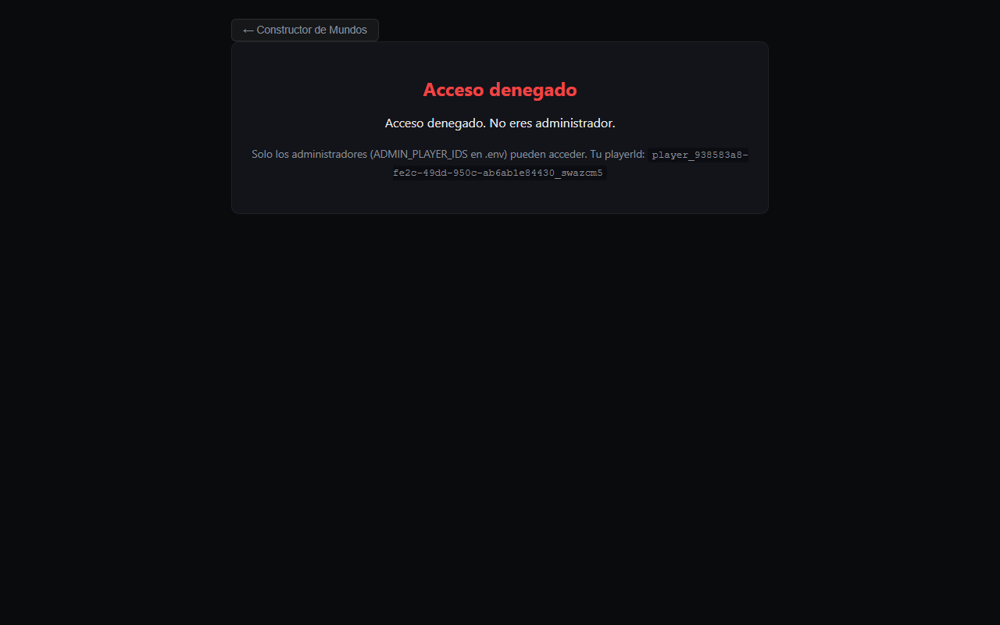
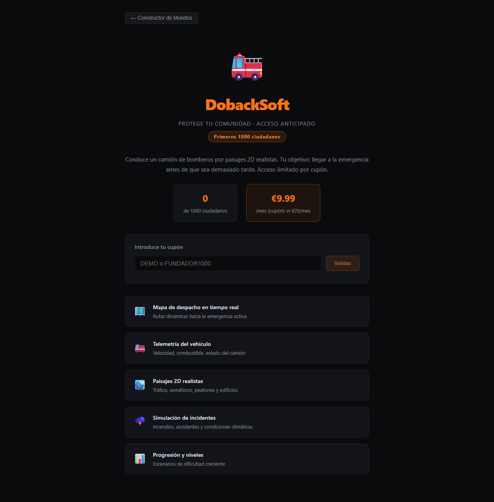

Captura: landing

Un solo documento para entender, ejecutar, verificar y trabajar en el proyecto.
Generado: 2026-03-08 11:23:58
Artificial World es una base para crear civilizaciones vivas con memoria, héroes, refugios y comunidades. La verdad estratégica vive en 2D; la encarnación 3D es capa futura.
Mensaje corto: Empieza con un refugio. Elige una semilla. Mira nacer tu civilización.
| Capa | Estado | Evidencia |
|---|---|---|
| Motor Python | Real | principal.py, 13 acciones, persistencia SQLite, Modo Sombra |
| Web fullstack | Demo | Backend 3001, Frontend 5173, motor JS propio |
| HeroRefuge | Parcial | Refugios jugables, semillas, mundos ligeros |
| Panel Administrador | Real | AdminPanel.jsx, ruta #admin, modo dios |
| DobackSoft | Demo | UI en hub; producto completo fuera del repo |
| 3D | Roadmap | No implementado |
El Panel Administrador está implementado y operativo. Acceso: #admin en el Hub (requiere ADMIN_PLAYER_IDS en .env).
Ubicación: frontend/src/components/AdminPanel.jsx
pruebas/reporte_produccion.log
[2026-03-08 12:23:12] ====================================================================== [2026-03-08 12:23:12] MUNDO_ARTIFICIAL - TESTS PRODUCCION [2026-03-08 12:23:12] Inicio: 2026-03-08T12:23:12.447643 [2026-03-08 12:23:12] ====================================================================== [2026-03-08 12:23:12] --- test_estructural: Tests estructurales (imports, config, modulos) --- [2026-03-08 12:23:12] OK test_estructural [2026-03-08 12:23:12] OK test_import_principal [2026-03-08 12:23:12] OK test_import_sistemas [2026-03-08 12:23:12] OK test_import_tipos [2026-03-08 12:23:12] OK test_utilidades_paths [2026-03-08 12:23:12] Estructurales: 13 OK, 0 FAIL [2026-03-08 12:23:12] --- test_core: Tests nucleo (motor, directivas, watchdog) --- [2026-03-08 12:23:13] OK test_core [2026-03-08 12:23:13] OK test_watchdog_detecta_trampa [2026-03-08 12:23:13] OK test_watchdog_detecta_bucle_accion [2026-03-08 12:23:13] OK test_watchdog_sin_variedad_global [2026-03-08 12:23:13] OK test_watchdog_sin_alertas_variedad_normal [2026-03-08 12:23:13] 22/22 tests pasaron [2026-03-08 12:23:13] --- test_cronica_fundacional: Tests cronica fundacional (headless, artefactos) --- [2026-03-08 12:23:15] OK test_cronica_fundacional [2026-03-08 12:23:15] OK test_cronica_genera_archivos [2026-03-08 12:23:15] OK test_cronica_reproducible_misma_semilla [2026-03-08 12:23:15] OK test_script_cronica_ejecuta [2026-03-08 12:23:15] Todas las pruebas de crónica pasaron. [2026-03-08 12:23:15] --- test_modo_sombra_completo: Tests Modo Sombra completo --- [2026-03-08 12:23:15] OK test_modo_sombra_completo [2026-03-08 12:23:15] OK test_trazabilidad_comando_completado: ['comando_sombra_iniciado', 'comando_sombra_completado'] [2026-03-08 12:23:15] OK test_trazabilidad_historial: ['COMANDO_EMITIDO', 'MODO_ACTIVADO'] [2026-03-08 12:23:15] OK test_legacy_control_total_wasd_sin_gestor [2026-03-08 12:23:15] OK test_cola_vacia_vuelve_a_autonomo [2026-03-08 12:23:15] TODOS LOS TESTS MODO SOMBRA COMPLETO: OK [2026-03-08 12:23:15] --- test_perseguir_hasta_matar: Tests persecucion hasta matar (combate) --- [2026-03-08 12:23:16] OK test_perseguir_hasta_matar [2026-03-08 12:23:16] OK test_atacar_adyacente_mata_en_4_golpes: 4 golpes, salud final=0.0 [2026-03-08 12:23:16] OK test_perseguir_hasta_matar: víctima eliminada en tick 31 [2026-03-08 12:23:16] TODOS OK [2026-03-08 12:23:16] --- test_interacciones_sociales: Tests interacciones sociales --- [2026-03-08 12:23:16] OK test_interacciones_sociales [2026-03-08 12:23:16] OK test_seguir_emite_evento: ['siguio'] [2026-03-08 12:23:16] OK test_seguir_adyacente_mejora_confianza: 0.00->0.07 [2026-03-08 12:23:16] OK test_relaciones_afectan_motor_decision_compartir: mod_relaciones sin=0.000 con=0.240 [2026-03-08 12:23:16] OK test_relaciones_afectan_motor_decision_huir: mod_relaciones sin=0.000 con=0.280 [2026-03-08 12:23:16] TODOS LOS TESTS INTERACCIONES SOCIALES: OK [2026-03-08 12:23:16] --- test_bug_robar: Tests regresion robar --- [2026-03-08 12:23:17] OK test_bug_robar [2026-03-08 12:23:17] OK: AccionRobar.es_viable = False cuando no hay nadie cerca con comida [2026-03-08 12:23:17] OK: robar NO aparece en candidatas [2026-03-08 12:23:17] OK: Clara decide 'descansar' (score=0.048) [2026-03-08 12:23:17] OK: AccionRobar.es_viable = True cuando hay victima cercana con comida [2026-03-08 12:23:17] TODOS LOS TESTS DEL BUG ROBAR: PASADOS [2026-03-08 12:23:17] --- test_watchdog_fixes: Tests fixes watchdog --- [2026-03-08 12:23:17] OK test_watchdog_fixes [2026-03-08 12:23:17] OK FIX1 OK: hambre=1.0 + mover -> HAMBRE_CRITICA_SIN_RESPUESTA generada [2026-03-08 12:23:17] OK FIX2 OK: hambre=1.0 + mover 15 ticks -> HAMBRE_SIN_COMIDA_DISPONIBLE generada [2026-03-08 12:23:17] OK FIX3 OK: mover 100% sin supervivencia -> SOLO_MOVIMIENTO_GLOBAL generada [2026-03-08 12:23:17] OK FIX4 OK: hambre=1.0 + comer -> sin falso positivo HAMBRE_CRITICA_SIN_RESPUESTA [2026-03-08 12:23:17] Resumen: 4 OK, 0 FALLOS [2026-03-08 12:23:17] --- test_watchdog_integracion: Tests integracion watchdog --- [2026-03-08 12:23:17] OK test_watchdog_integracion [2026-03-08 12:23:17] OK: test_watchdog_integracion_trampa_posicion [2026-03-08 12:23:17] OK: test_watchdog_integracion_log_escrito [2026-03-08 12:23:17] OK: test_watchdog_integracion_simulacion_completa [2026-03-08 12:23:17] Todos los tests de integración del watchdog pasaron. [2026-03-08 12:23:17] --- test_arranque_limpio: Test arranque limpio --- [2026-03-08 12:23:18] OK test_arranque_limpio [2026-03-08 12:23:18] OK: 10 ticks ejecutados sin excepcion [2026-03-08 12:23:18] TEST ARRANQUE LIMPIO: OK [2026-03-08 12:23:18] --- test_integracion_produccion: Tests integracion produccion --- [2026-03-08 12:23:20] OK test_integracion_produccion [2026-03-08 12:23:20] OK test_hambre_mejora_con_fix: 8/7 con hambre OK [2026-03-08 12:23:20] OK test_modo_sombra_comandos_ejecutan [2026-03-08 12:23:20] OK test_simulacion_200_ticks_sin_crash [2026-03-08 12:23:20] OK test_sintaxis_todos_modulos [2026-03-08 12:23:20] Integracion produccion: 5 OK, 0 FAIL [2026-03-08 12:23:20] ====================================================================== [2026-03-08 12:23:20] RESUMEN [2026-03-08 12:23:20] Suites: 11 OK, 0 FAIL de 11 [2026-03-08 12:23:20] Duracion: 8.3s [2026-03-08 12:23:20] Reporte: C:\Users\Cosigein SL\Desktop\artificial word\pruebas\reporte_produccion.log [2026-03-08 12:23:20] ======================================================================
verificacion_completa.json
{
"version": 1,
"proyecto": "artificial_word",
"timestamp": "2026-03-08T12:23:28.469131",
"duracion_segundos": 16.76,
"resumen": {
"total": 8,
"ok": 8,
"fail": 0,
"estado": "OK"
},
"verificaciones": [
{
"nombre": "sintaxis",
"ok": true,
"mensaje": "Todos los .py compilan",
"detalles": {
"errores": []
}
},
{
"nombre": "tests_produccion",
"ok": true,
"mensaje": "9 suites OK",
"detalles": {
"exit_code": 0,
"resumen": [
" OK test_sintaxis_todos_modulos",
" Integracion produccion: 5 OK, 0 FAIL",
"Suites: 11 OK, 0 FAIL de 11"
]
}
},
{
"nombre": "modo_competencia",
"ok": true,
"mensaje": "1 eventos, integridad OK",
"detalles": {
"eventos": 1,
"corruptos": []
}
},
{
"nombre": "simulacion_completa",
"ok": true,
"mensaje": "guardar OK, cargar OK, reporte OK, competencia=5 eventos",
"detalles": {
"tick": 50,
"entidades": 8,
"eventos_competencia": 5
}
},
{
"nombre": "modo_sombra",
"ok": true,
"mensaje": "activar, comando, desactivar OK. Competencia=3 eventos",
"detalles": {
"eventos_competencia": 3
}
},
{
"nombre": "logs_cierre",
"ok": true,
"mensaje": "Cierre limpio detectado",
"detalles": {
"cierre_limpio": true
}
},
{
"nombre": "reporte_sesion",
"ok": true,
"mensaje": "Reporte válido: 0 ticks",
"detalles": {
"ticks": 0,
"keys": [
"version",
"proyecto",
"inicio",
"fin",
"duracion_segundos",
"tick_final",
"entidades",
"nombres_entidades",
"metricas_globales",
"alertas_watchdog_total"
]
}
},
{
"nombre": "browser_e2e",
"ok": true,
"mensaje": "Tests E2E HTML OK",
"detalles": {
"exit_code": 0,
"stderr": "127.0.0.1 - - [08/Mar/2026 12:23:24] \"GET /artificial-world.html HTTP/1.1\" 200 -\n"
}
}
]
}
| Modo | Comando | Resultado |
|---|---|---|
| Python | python principal.py | Ventana pygame, motor completo |
| Web | .scriptsiniciar_fullstack.ps1 | Backend 3001, Frontend 5173 |
| Tests | python pruebas/run_tests_produccion.py | 11 suites |
| Componente | Estado | Dónde |
|---|---|---|
| Motor Python | Real | principal.py, nucleo/, agentes/ |
| Persistencia | Real | mundo_artificial.db |
| Modo Sombra | Real | gestor_modo_sombra.py |
| Web fullstack | Demo | scripts/iniciar_fullstack.ps1 |
| Admin Panel | Real | AdminPanel.jsx, #admin |
| HeroRefuge | Parcial | backend/src/simulation/heroRefuge.js |
| 3D | Roadmap | — |



